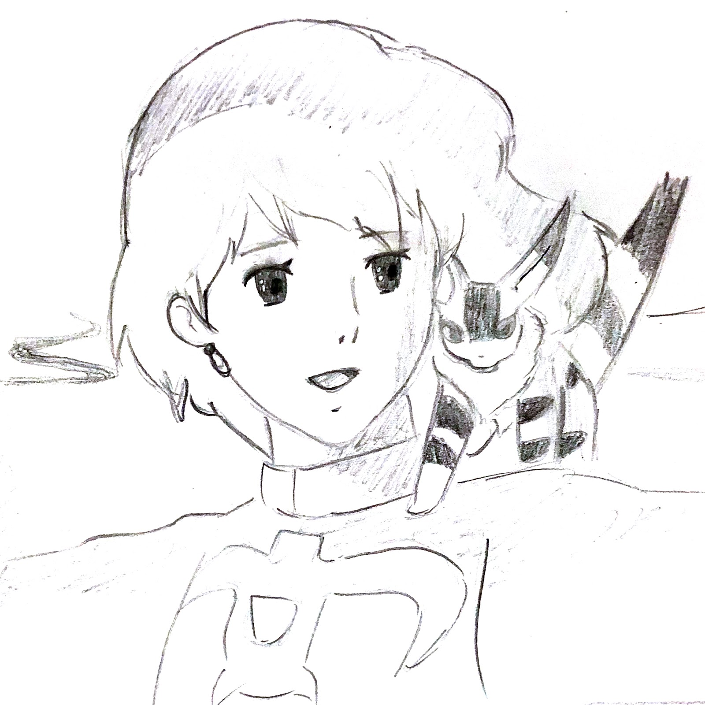

WHY-為什麼想要介紹吉卜力
小編們team
我們三個小編都非常熱愛看吉卜力動畫，那些無數的作品是小時候陪伴我們一起成長的。即使看過了無數遍，每次看都會有新的見解，而且隨著年齡的增長，也更能體會到作者想表達的深層意涵。我們希望能將我們從中看到的、學到的與人分享。
為什麼why
我們上網查過很多的網站，發現很多只有介紹宮崎駿動畫，卻沒有介紹吉卜力工作室的。或是以為是宮崎駿的作品，但其實是其他人的。另外，吉卜力工作室的官網是全日文的介面，我們希望能藉由這個網站將資料整理成中文，讓更多人認識吉卜力工作室。
開始let's start
希望大家在觀看的時候保持著愉悅的心情，一起和我們進入吉卜力的魅力吧！(小備註:圖下方有標註的均是由官網下載，其他沒標注的，都是小編自己畫的喔！)
History-吉卜力工作室的發展史
「吉卜力」是由宮崎駿命名，意思是在撒哈拉沙漠上吹著的熱風（ghibli）
REPRESENTATIVE-吉卜力代表作
-

1984
風之谷
-風の谷のナウシカ-
這部是吉卜力的第一部作品
觀影人數:91萬人，票房:7.9億日圓
<榮譽>
◎英國電影協會-前十大動畫電影
◎IMDB全球經典電影排行TOP.250-排名NO.217(2019.4更新)
◎RankinGoo網站調查:最想重看的吉卜力動畫排名第二
◎全國映連獎：日本電影作品部門第1名、日本電影作品獎第1名
◎第1屆映像軟體大獎：影像部門動畫獎
-
1988
龍貓
-となりのトトロ-
觀影人數:80萬人，票房5.9億日圓(與螢火蟲之墓同時上映)
<榮譽>
◎IMDB全球經典電影排行TOP.250-排名NO.133(2019.4更新)
◎第6屆日本動畫大賞(1998年)-最優秀作品獎
◎第10屆橫濱電影節(1989年)-年度10大優秀電影第2名
◎第3屆AVA國際映像Softair-影像部門動畫獎
-
2001
神隱少女
-千と千尋の神隠し-
觀影人數:2350萬人，票房:304億日圓
<榮譽>
◎IMDB全球經典電影排行TOP.250-排名NO.27(2019.4更新)
◎東京動畫獎-2002年度最佳動畫
◎第25回日本電影金像獎-最佳電影獎
◎第52屆柏林影展(2002年)-金熊獎
◎第75屆奧斯卡金像獎(2003年)-奧斯卡最佳動畫片獎
◎吉卜力工作室2016年官方選舉：最想在戲院重看的吉卜力作品獲得第1名
-
2004
霍爾的移動城堡
-ハウルの動く城-
觀影人數:1500萬人，票房:196億日圓
<榮譽>
◎IMDB全球經典電影排行TOP.250-排名NO.135(2019.4更新)
◎第61屆威尼斯影展(2004年)-技術貢獻獎
◎第4屆東京動畫獎(2005年)-年度最佳動畫
◎第9屆好萊塢電影展(2005年)-最佳動畫獎
-
2008
崖上的波妞
-崖の上のポニョ-
觀影人數:1200萬人，票房:155億日圓
<榮譽>
◎第32屆日本電影金像獎(2009年)-最優秀動畫作品獎
◎第18屆日本影評家大獎(2008年)-電影音樂獎
Work-作品介紹

風之谷
風の谷のナウシカ
© 1984 Studio Ghibli・H(圖片出自吉卜力工作室官網)
螢火蟲之墓
火垂るの墓
© 野坂昭如／新潮社,1988(圖片出自吉卜力工作室官網)

心之谷
耳をすませば
© 1995 柊あおい/集英社・Studio Ghibli・NH(圖片出自吉卜力工作室官網)

貓的報恩
猫の恩返し
© 2002 猫乃手堂・Studio Ghibli・NDHMT(圖片出自吉卜力工作室官網)

霍爾的移動城堡
ハウルの動く城
© 2004 Studio Ghibli・NDDMT(圖片出自吉卜力工作室官網)

借物少女艾莉緹
借りぐらしのアリエッティ
© 2010 Studio Ghibli・NDHDMTW(圖片出自吉卜力工作室官網)

來自紅花坂
コクリコ坂から
© 2011 高橋千鶴・佐山哲郎・Studio Ghibli・NDHDMT(圖片出自吉卜力工作室官網)
Team-吉卜力團隊主要人物

宮崎駿
圖片來源:遊戲角落(段長興) 圖／WireImage
高畑勳
圖片來源:The Alantic SHIZUO KAMBAYASHI / AP

宮崎吾郎
圖片來源:Agence France-Presse
Thank you for watching.